Anwendungsfälle: ÖPNV und Verkehr
Anwendungsfälle: ÖPNV und Verkehr
So bearbeiten Service-Teams in ÖPNV und Verkehr typische Anfragen mit SocialHub CX.

SocialHub CX bildet im Fahrgastservice drei typische Abläufe ab: Störungsmeldungen, Fragen zu Abo und Erstattung sowie Lob und Beschwerde. Jeder Ablauf zeigt, wie Anfragen aus Social Media, WhatsApp, E-Mail und Website-Chat als Tickets ankommen, verteilt und beantwortet werden.
Die Abläufe im Überblick
Störungsmeldungen auf Social Media und per E-Mail bearbeiten
Ihr Team sieht alle Störungsanfragen an einem Ort, antwortet einheitlich und erkennt im Dashboard, ob das Ziel für die Erstantwort gehalten wurde.
Fragen zu Abo, Deutschlandticket und Erstattung beantworten
Wiederkehrende Fragen werden einheitlich und nachvollziehbar beantwortet; neue Kolleginnen und Kollegen finden Antworten über Vorlagen und Co-Pilot schneller.
Lob und Beschwerden an Fachabteilungen übergeben
Fachabteilungen werden eingebunden, ohne dass Informationen in E-Mail-Weiterleitungen verloren gehen; der Verlauf bleibt am Ticket nachvollziehbar.
Störungsmeldungen auf Social Media und per E-Mail bearbeiten
Eine Linie fällt aus. Innerhalb kurzer Zeit kommen Kommentare unter Posts, Direktnachrichten, WhatsApp-Nachrichten und E-Mails mit Fragen zu Ersatzverkehr, Anschlüssen und Erstattung – auf mehreren Kanälen gleichzeitig.
Ihr Team sieht alle Störungsanfragen an einem Ort, antwortet einheitlich und erkennt im Dashboard, ob das Ziel für die Erstantwort gehalten wurde.
So läuft es in SocialHub CX
- Alle Nachrichten landen als Tickets im Workspace – E-Mails im Modul E-Mail, Kommentare, Direktnachrichten und Erwähnungen im Modul Social.
- Ein regelbasierter Ordner, z. B. „Störung“, sammelt Tickets mit passenden Begriffen; die KI-Verschlagwortung setzt auf Wunsch Tags.
- Stichwortregeln je Postfach leiten Fragen zu „Erstattung“ direkt an das zuständige Team.
- Ihr Team antwortet mit einer abgestimmten Störungsvorlage per „/“, persönlich ergänzt durch Variablen wie den Vornamen.
- Gleichartige Tickets werden per Sammelaktion erledigt; das Dashboard zeigt Eingang, Rückstand und pünktliche Erstantworten.
Fragen zu Abo, Deutschlandticket und Erstattung beantworten
Das Abo-Center erhält täglich viele ähnliche Fragen: Kündigung, Adressänderung, Deutschlandticket, Erstattung nach Verspätung. Sie kommen per E-Mail, aber auch als Direktnachricht oder WhatsApp-Nachricht.
Wiederkehrende Fragen werden einheitlich und nachvollziehbar beantwortet; neue Kolleginnen und Kollegen finden Antworten über Vorlagen und Co-Pilot schneller.
So läuft es in SocialHub CX
- E-Mails werden per Stichwortregel („Kündigung“, „Deutschlandticket“, „Erstattung“) dem Abo-Team zugewiesen, reihum an verfügbare Mitarbeitende.
- Direktnachrichten und WhatsApp-Nachrichten landen als Tickets im Modul Social und werden dem Team zugewiesen.
- Ihr Team fügt Vorlagen mit Variablen ein und verlinkt passende Help-Center-Artikel.
- Der Co-Pilot entwirft Antworten auf Basis Ihrer Tarifbestimmungen und zeigt die Quellen.
- Optional lernt der Co-Pilot aus gelösten Tickets der letzten zwölf Monate – als anonymisierte Zusammenfassungen.
Lob und Beschwerden an Fachabteilungen übergeben
Ein Fahrgast lobt einen Fahrer, ein anderer beschwert sich über eine ausgefallene Klimaanlage. Der Kundenservice antwortet, braucht aber Rückmeldung aus Betrieb oder Werkstatt.
Fachabteilungen werden eingebunden, ohne dass Informationen in E-Mail-Weiterleitungen verloren gehen; der Verlauf bleibt am Ticket nachvollziehbar.
So läuft es in SocialHub CX
- Das Ticket wird dem zuständigen Team zugewiesen oder bleibt beim Service, mit Kolleg:innen aus der Fachabteilung als Beobachter:innen.
- Rückfragen laufen über interne Notizen, die Fahrgäste nie sehen.
- Beobachter:innen werden bei Status- und Zuständigkeitswechsel benachrichtigt.
- Tags wie „Lob“ oder „Fahrzeug“ machen Themen später im Dashboard auswertbar.
- Das Aktivitätsprotokoll zeigt, wer wann was getan hat.
Zur Branchenseite
FAQ
Häufige Fragen
Kann SocialHub CX Störungsanfragen automatisch sammeln?
Ja, SocialHub CX sammelt Störungsanfragen über regelbasierte Ordner, die sich laufend aktualisieren, etwa nach Tags oder Kanal. Zusätzlich kann die KI neue Tickets verschlagworten. So sieht Ihr Team alle Anfragen zu einer Störung in einer Ansicht und arbeitet sie mit Vorlagen und Sammelaktionen ab.
Kann SocialHub CX bei Störungen automatisch antworten?
Nein, SocialHub CX versendet keine Antworten automatisch; jede Antwort sendet ein Mensch. Abgestimmte Vorlagen per „/“ und Co-Pilot-Entwürfe beschleunigen das Antworten. Für E-Mails gibt es je Postfach eine automatische Eingangsbestätigung mit Ticketnummer, die Sie für Störungslagen formulieren können.
Kann der Co-Pilot von SocialHub CX unsere Tarifbestimmungen nutzen?
Ja, der Co-Pilot von SocialHub CX nutzt Help-Center-Artikel und Dateien, die Sie als Wissensquelle hinterlegen, sowie frühere Gespräche, zum Beispiel Tarifbestimmungen oder Erstattungsregeln. Er zeigt bei jeder Antwort die Quellen. Widersprechen sich Artikel und gelernte Tickets, gilt der Artikel; gesendet wird immer von Ihrem Team.
Wie verteilt SocialHub CX Abo-Anfragen?
SocialHub CX verteilt Abo-Anfragen per E-Mail über Stichwortregeln je Postfach, etwa für „Kündigung“ oder „Deutschlandticket“. Danach gehen Tickets an das Abo-Team, eine Person oder reihum per Round Robin. Wer abwesend ist, erhält keine neuen Tickets; Social-Media-Tickets weisen Sie manuell zu.
Können Fachabteilungen in SocialHub CX mitarbeiten?
Ja, in SocialHub CX arbeiten Fachabteilungen als eigene Teams oder als Beobachter:innen an Tickets mit. Rückfragen und Antworten laufen über interne Notizen, die Kundinnen und Kunden nie sehen. Beobachter:innen werden bei Status- und Zuständigkeitswechseln benachrichtigt, im Produkt und per Browser-Push.
Kann ich in SocialHub CX Beschwerden nach Themen auswerten?
Ja, SocialHub CX wertet Beschwerden über Tags aus, die Ihr Team setzt oder die KI auf Wunsch automatisch vergibt. Im Dashboard filtern Sie nach Team und Person, im Social-Dashboard sehen Sie die Verteilung nach Kanal, Typ und Stimmung. Den Zeitraum vergleichen Sie mit Vorzeitraum oder Vorjahr.
Diese Abläufe live sehen
In der Demo zeigen wir die Anwendungsfälle mit Beispielen aus Ihrer Branche.
- Anbieter und Hosting in Deutschland
- ISO 27001 (SocialHub)
- DSGVO & BDSG, AV-Vertrag auf Anfrage
- Hosting-Anbieter mit BSI-C5-Testat